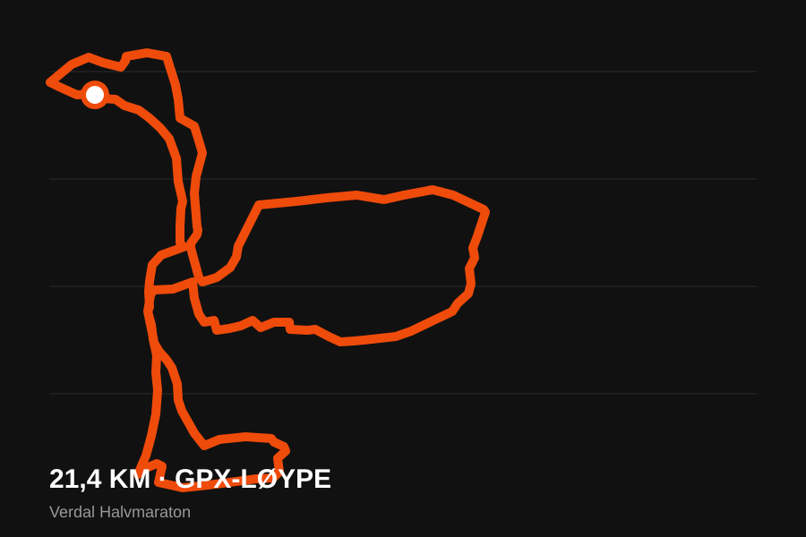
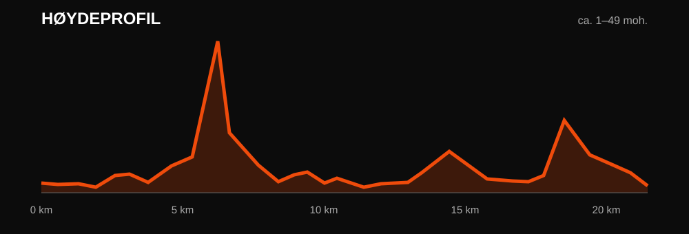

21.1
KM
HALVMARATON
Hoveddistansen gjennom Verdal. For deg som vil konkurrere, sette pers eller fullføre ditt første halvmaraton.
Se løypa →VERDAL HALVMARATON
Velkommen til en ny løpsopplevelse i Verdal. Enten du jakter ny personlig rekord, løper ditt første løp eller vil kjenne på løpsgleden sammen med andre, ønsker vi å skape en dag hele Verdal kan samles rundt.
FINN DIN DISTANSE
KM
Hoveddistansen gjennom Verdal. For deg som vil konkurrere, sette pers eller fullføre ditt første halvmaraton.
Se løypa →KM
En rask og tilgjengelig distanse for både konkurranseløpere og mosjonister.
Les mer →FOR DE YNGSTE
En egen løpsopplevelse for barna, med fokus på mestring, løpeglede og en skikkelig målgang.
Les mer →ALT DU TRENGER Å VITE
Detaljert arena, startområde og målområde publiseres når dette er klart.
Starttider for de ulike distansene kommer.
Informasjon om henting av startnummer og tidtaking publiseres før løpet.
Premiering og klasseinndeling annonseres senere.
HALVMARATONLØYPA
Løypeillustrasjonen og høydeprofilen under er laget direkte fra GPX-filen. GPX-filen måler omtrent 21,4 km, med høyde fra omtrent 1 til 49 moh.
Åpne interaktiv løype i Strava ↗


INNHERRED EXPRESSEN
Innherred Expressen startet med en enkel idé: å samle kompisgjengen og stille lag på St. Olavsloppet. Etter to år sammen på startstreken har løpegleden bare vokst.
Nå tar vi neste steg. Vi ønsker å skape vårt eget løp – Verdal Halvmaraton. Et arrangement laget av løpere, for løpere, med mål om å samle både mosjonister, konkurranseløpere og publikum til en skikkelig løpsfest i Verdal.
KLAR FOR START?
Påmeldingen er ikke åpnet ennå. Påmeldingslenke og priser legges ut her.
Hold meg oppdatertKONTAKT
Kontaktinformasjon og samarbeidspartnere kommer her.